CS229
Lecture notes
翻译：CycleUser
Part IX
因子分析（Factor analysis）
如果有一个多个高斯模型混合（a
mixture of several Gaussians）而来的数据集 x(i) ∈ Rn ，那么就可以用期望最大化算法（EM algorithm）来对这个混合模型（mixture model）进行拟合。这种情况下，对于有充足数据（sufficient data）的问题，我们通常假设可以从数据中识别出多个高斯模型结构（multiple-Gaussian structure）。例如，如果我们的训练样本集合规模（training set size） m 远远大于（significantly larger than）数据的维度（dimension） n，就符合这种情况。
然后来考虑一下反过来的情况，也就是 n 远远大于 m，即 n ≫ m。在这样的问题中，就可能用单独一个高斯模型来对数据建模都很难，更不用说多个高斯模型的混合模型了。由于 m 个数据点所张开（span）的只是一个 n 维空间 Rn 的低维度子空间（low-dimensional subspace），如果用高斯模型（Gaussian）对数据进行建模，然后还是用常规的最大似然估计（usual maximum likelihood estimators）来估计（estimate）平均值（mean）和方差（covariance），得到的则是：

we would find that
the matrix Σ is singular. This means that Σ−1 does not exist,
and 1/|Σ|1/2 = 1/0. But both of these terms are needed in computing the usual density
of a multivariate Gaussian distribution. Another way of stating this difficulty
is that maximum likelihood estimates of the parameters result in a Gaussian
that places all of its probability in the affine space spanned by the data,1 and this corresponds to a singular covariance matrix.
我们会发现这里的 Σ
是一个奇异（singular）矩阵。这也就意味着其逆矩阵 Σ−1 不存在，而 1/|Σ|1/2 = 1/0。 但这几个变量都还是需要的，要用来计算一个多元高斯分布（multivariate Gaussian distribution）的常规密度函数（usual density）。还可以用另外一种方法来讲述清楚这个难题，也就是对参数（parameters）的最大似然估计（maximum likelihood estimates）会产生一个高斯分布（Gaussian），其概率分布在由样本数据所张成的仿射空间（affine space）中，对应着一个奇异的协方差矩阵（singular
covariance matrix）。
1This is the set of points x satisfying x = Σ mi=1 αix(i), for some αi’s so that Σ mi=1 α1 = 1.
这是一个点集，对于某些 αi，此集合中的点 x 都满足 x = Σ mi=1 αix(i), 因此 Σ mi=1 α1 = 1。
通常情况下，除非 m 比 n 大出相当多（some reasonable amount），否则最大似然估计（maximum likelihood estimates）得到的均值（mean）和方差（covariance）都会很差（quite poor）。尽管如此，我们还是希望能用已有的数据，拟合出一个合理（reasonable）的高斯模型（Gaussian model），而且还希望能识别出数据中的某些有意义的协方差结构（covariance structure）。那这可怎么办呢？
在接下来的这一部分内容里，我们首先回顾一下对 Σ 的两个可能的约束（possible restrictions），这两个约束条件能让我们使用小规模数据来拟合 Σ，但都不能就我们的问题给出让人满意的解（satisfactory solution）。然后接下来我们要讨论一下高斯模型的一些特点，这些后面会用得上，具体来说也就是如何找到高斯模型的边界和条件分布。最后，我们会讲一下因子分析模型（factor analysis model），以及对应的期望最大化算法（EM algorithm）。
1 Σ 的约束条件（Restriction）
如果我们没有充足的数据来拟合一个完整的协方差矩阵（covariance matrix），就可以对矩阵空间 Σ 给出某些约束条件（restrictions）。例如，我们可以选择去拟合一个对角（diagonal）的协方差矩阵 Σ。这样，读者很容易就能验证这样的一个协方差矩阵的最大似然估计（maximum likelihood estimate）可以由对角矩阵（diagonal matrix） Σ 满足：
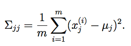
因此，Σjj 就是对数据中第 j 个坐标位置的方差值的经验估计（empirical estimate）。
Recall that the
contours of a Gaussian density are ellipses. A diagonal Σ corresponds to a Gaussian where the major
axes of these ellipses are axis- aligned.
回忆一下，高斯模型的密度的形状是椭圆形的。对角线矩阵 Σ 对应的就是椭圆长轴（major
axes）对齐（axis-
aligned）的高斯模型。
有时候，我们还要对这个协方差矩阵（covariance matrix）给出进一步的约束，不仅设为对角的（major axes），还要求所有对角元素（diagonal entries）都相等。这时候，就有 Σ = σ2I，其中 σ2 是我们控制的参数。对这个 σ2 的最大似然估计则为：

这种模型对应的是密度函数为圆形轮廓的高斯模型（在二维空间也就是平面中是圆形，在更高维度当中就是球（spheres）或者超球体（hyperspheres））。
如果我们对数据要拟合一个完整的，不受约束的（unconstrained）协方差矩阵 Σ，就必须满足 m ≥ n + 1，这样才使得对 Σ 的最大似然估计不是奇异矩阵（singular
matrix）。在上面提到的两个约束条件之下，只要 m
≥ 2，我们就能获得非奇异的（non-singular） Σ。
然而，讲 Σ 限定为对角矩阵，也就意味着对数据中不同坐标（coordinates）的 xi，xj建模都将是不相关的（uncorrelated），且互相独立（independent）。通常，还是从样本数据里面获得某些有趣的相关信息结构比较好。如果使用上面对 Σ 的某一种约束，就可能没办法获取这些信息了。在本章讲义里面，我们会提到因子分析模型（factor analysis model），这个模型使用的参数比对角矩阵 Σ 更多，而且能从数据中获得某些相关性信息（captures some correlations），但也不能对完整的协方差矩阵（full covariance matrix）进行拟合。
2 多重高斯模型（Gaussians ）的边界（Marginal）和条件（Conditional）
在讲解因子分析（factor analysis）之前，我们要先说一下一个联合多元高斯分布（joint multivariate Gaussian
distribution）下的随机变量（random variables）的条件（conditional）和边界（marginal）分布（distributions）。
假如我们有一个值为向量的随机变量（vector-valued random variable）：
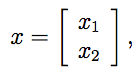
其中 x1 ∈ Rr, x2 ∈ Rs，因此 x
∈ Rr+s。设 x ∼ N(μ,Σ), 即以 μ 和 Σ 为参数的正态分布，则这两个参数为：

其中， μ1 ∈ Rr, μ2 ∈ Rs, Σ11 ∈ Rr×r, Σ12 ∈ Rr×s，以此类推。由于协方差矩阵（covariance
matrices）是对称的（symmetric），所以有 Σ12 = ΣT21.
基于我们的假设，x1 和 x2 是联合多元高斯分布(jointly
multivariate Gaussian)。 那么 x1 的边界分布是什么？不难看出 x1 的期望 E[x1] = μ1 ，而协方差 Cov(x1) = E[(x1 − μ1)(x1 − μ1)] = Σ11 。接下来为了验证后面这一项成立，要用 x1 和 x2的联合方差的概念：
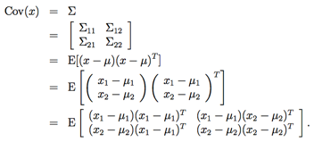
Matching the upper-left sub blocks in the matrices in the second and the last lines above
gives the result.
在上面的最后两行中，匹配（Matching）矩阵的左上方子阵（upper-left
sub blocks），就可以得到结果了。
高斯分布的边界分布（marginal
distributions）本身也是高斯分布，所以我们就可以给出一个正态分布 x1 ∼ N (μ1, Σ11) 来作为 x1 的边界分布（marginal
distributions）。
此外，我们还可以提出另一个问题，给定 x2 的情况下 x1 的条件分布是什么呢？通过参考多元高斯分布的定义，就能得到这个条件分布 x1|x2 ∼ N (μ1|2, Σ1|2)为：
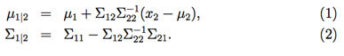
在下一节对因子分析模型（factor
analysis model）的讲解中，上面这些公式就很有用了，可以帮助寻找高斯分布的条件和边界分布（conditional and marginal distributions）。
3 因子分析模型（Factor analysis model）
在因子分析模型（factor analysis
model）中，我们制定在 (x,
z) 上的一个联合分布，如下所示，其中 z
∈ Rk 是一个潜在随机变量（latent
random variable）：
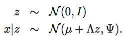
上面的式子中，我们这个模型中的参数是向量 μ
∈ Rn ，矩阵 Λ
∈ Rn×k，以及一个对角矩阵 Ψ
∈ Rn×n。k 的值通常都选择比 n 小一点的。
这样，我们就设想每个数据点 x(i) 都是通过在一个 k 维度的多元高斯分布 z(i) 中取样获得的。然后，通过计算 μ+Λz(i)，就可以映射到实数域 Rn 中的一个 k
维仿射空间（k-dimensional
affine space），在 μ
+ Λz(i) 上加上协方差 Ψ 作为噪音，就得到了 x(i)。
反过来，咱们也就可以来定义因子分析模型（factor analysis model），使用下面的设定：

其中的 ε
和 z 是互相独立的。然后咱们来确切地看看这个模型定义的分布（distribution our）。其中，随机变量 z 和 x 有一个联合高斯分布（joint Gaussian distribution）：
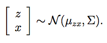
然后咱们要找到 μzx 和 Σ.
我们知道 z 的期望 E[z] = 0，这是因为 z 服从的是均值为 0 的正态分布 z ∼ N(0,I)。 此外我们还知道：

综合以上这些条件，就得到了：

下一步就是要找出 Σ，我们需要计算出 Σzz = E[(z − E[z])(z − E[z])T ]（矩阵Σ的左上部分（upper-left block）），Σzx = E[(z − E[z])(x − E[x])T ]（右上部分(upper-right block)），以及E[(x − E[x])(x
− E[x])T ] （右下部分(lower-right
block)）。
由于 z 是一个正态分布 z ∼ N (0, I)，很容易就能知道 Σzz = Cov(z) = I。另外：
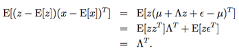
在上面的最后一步中，使用到了结论 E[zzT ] = Cov(z)（因为 z 的均值为 0），而且 E[zεT ] = E[z]E[εT ] = 0）（因为 z 和 ε 相互独立，因此乘积（product）的期望（expectation）等于期望的乘积）。
同样的方法，我们可以用下面的方法来找到 Σxx：
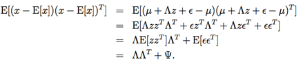
把上面这些综合到一起，就得到了：
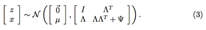
因此，我们还能发现 x 的边界分布（marginal distribution）为 x ∼ N(μ,ΛΛT +Ψ)。所以，给定一个训练样本集合 {x(i); i = 1, ..., m}，参数（parameters）的最大似然估计函数的对数函数（log likelihood），就可以写为：

为了进行最大似然估计，我们就要最大化上面这个关于参数的函数。但确切地对上面这个方程式进行最大化，是很难的，不信你自己试试哈，而且我们都知道没有算法能够以封闭形式（closed-form）来实现这个最大化。所以，我们就改用期望最大化算法（EM algorithm）。下一节里面，咱们就来推导一下针对因子分析模型（factor analysis）的期望最大化算法（EM）。
4 针对因子分析模型（factor analysis）的期望最大化算法（EM）
E 步骤的推导很简单。只需要计算出来 Qi(z(i)) = p(z(i)|x(i); μ, Λ, Ψ)。把等式(3) 当中给出的分布代入到方程（1-2），来找出一个高斯分布的条件分布，我们就能发现 z(i)|x(i); μ, Λ, Ψ ∼ N (μz(i)|x(i) , Σz(i)|x(i) )，其中：
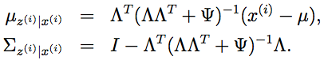
所以，通过对 μz(i)|x(i) 和 Σz(i)|x(i),进行这样的定义，就能得到：

接下来就是 M 步骤了。这里需要去最大化下面这个关于参数 μ, Λ, Ψ 的函数值：

我们在本文中仅仅对 Λ
进行优化，关于 μ
和 Ψ
的更新就作为练习留给读者自己进行推导了。
把等式(4) 简化成下面的形式：

上面的等式中，“z(i) ∼ Qi” 这个下标（subscript），表示的意思是这个期望是关于从 Qi 中取得的 z(i) 的。在后续的推导过程中，如果没有歧义的情况下，我们就会把这个下标省略掉。删除掉这些不依赖参数的项目后，我们就发现只需要最大化：
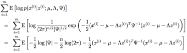
我们先对上面的函数进行关于 Λ
的最大化。可见只有最后的一项依赖 Λ。求导数，同时利用下面几个结论：tr a = a (for
a ∈ R), tr AB = tr BA, ∇Atr ABAT C = CAB + CT AB，就能得到：
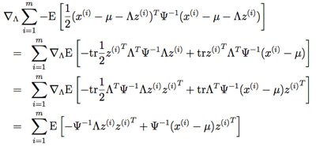
设置导数为 0，然后简化，就能得到：
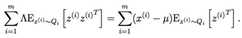
接下来，求解 Λ，就能得到：
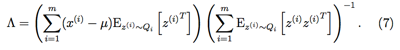
有一个很有意思的地方需要注意，上面这个等式和用最小二乘线性回归（least squares regression）推出的正则方程（normal equation）有密切关系：

与之类似，这里的 x 是一个关于 z（以及噪音 noise）的线性方程。考虑在 E 步骤中对 z 已经给出了猜测，接下来就可以尝试来对与 x 和 z 相关的未知线性量（unknown linearity）Λ 进行估计。接下来不出意料，我们就会得到某种类似正则方程的结果。然而，这个还是和利用对 z 的“最佳猜测（best guesses）” 进行最小二乘算法有一个很大的区别的；这一点我们很快就会看到了。
为了完成 M 步骤的更新，接下来我们要解出等式(7) 当中的期望值（values of the expectations）。由于我们定义 Qi 是均值（mean）为 μz(i)|x(i)，协方差（covariance）为 Σz(i)|x(i) 的一个高斯分布，所以很容易能得到：

上面第二个等式的推导依赖于下面这个事实：对于一个随机变量 Y，协方差 Cov(Y ) = E[Y Y T ]−E[Y ]E[Y ]T ，所以 E[Y Y T ] = E[Y ]E[Y ]T +Cov(Y)。把这个代入到等式(7)，就得到了 M
步骤中 Λ
的更新规则：

上面这个等式中，要特别注意等号右边这一侧的 Σz(i)|x(i)。这是一个根据 z(i) 给出的 x(i) 后验分布（posterior distribution）p(z(i)|x(i)) 的协方差，而在 M 步骤中必须要考虑到在这个后验分布中 z(i) 的不确定性（uncertainty）。推导 EM 算法的一个常见错误就是在 E 步骤进行假设，只需要算出潜在随机变量（latent random variable） z 的期望 E[z]，然后把这个值放到 M 步骤当中 z 出现的每个地方来进行优化（optimization）。当然，这能解决简单问题，例如高斯混合模型（mixture of Gaussians），在因子模型的推导过程中，就同时需要 E[zzT ] 和 E[z]；而我们已经知道，E[zzT ] 和 E[z]E[z]T 随着 Σz|x 而变化。因此，在 M 步骤就必须要考虑到后验分布（posterior distribution）p(z(i)|x(i))中 z 的协方差（covariance）。
最后，我们还可以发现，在 M 步骤对参数 μ 和 Ψ 的优化。不难发现其中的 μ 为：
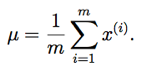
由于这个值不随着参数的变换而改变（也就是说，和 Λ 的更新不同，这里等式右侧不依赖 Qi(z(i)) = p(z(i)|x(i); μ, Λ, Ψ)，这个 Qi(z(i)) 是依赖参数的），这个只需要计算一次就可以，在算法运行过程中，也不需要进一步更新。类似地，对角矩阵 Ψ 也可以通过计算下面这个式子来获得：
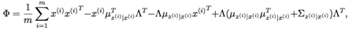
然后只需要设 Ψii = Φii（也就是说，设 Ψ
为一个仅仅包含矩阵 Φ
中对角线元素的对角矩阵）。